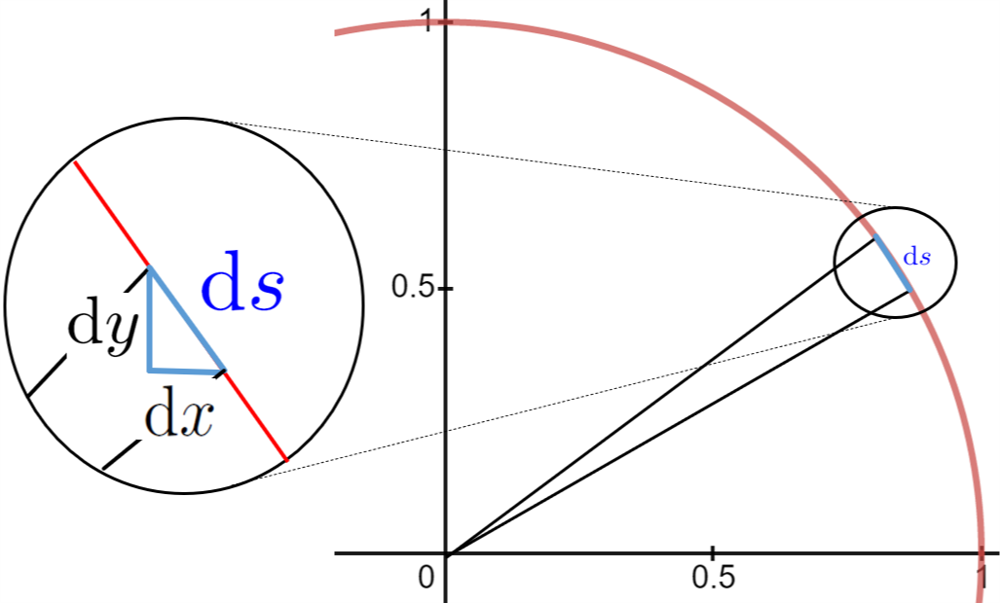

Chapter 13 What’s Wrong with Differentials?
Introduction.
“In the pursuit of truth we must beware of being misled by terms which we do not rightly understand. That is the chief point.” -- Bertrand Russell 1 \((1872 - 1970)\)
To see what’s wrong with differentials consider the circle and the differential triangle below.

Suppose that \(\dx{s}\) is one of the differentials that makes up the circle. Since \(\dx{s}\) is a non-zero increment it has two distinct endpoints so we can draw the two radii shown. Because the two (distinct) endpoints that lie on the circle are infinitely close together the two lines have the same slope. But all of the radii of a circle pass through the center of the circle so these two in particular must also intersect at the center, and we conclude that we have two parallel lines that intersect.
But the only way that can happen is if they are actually the same line, and if they are the same line then the points on the circle are not really distinct as we’ve drawn them. But if they are not distinct then \(\dx{x}\text{,}\) \(\dx{y}\text{,}\) and \(\dx{s}\) are all actually equal to zero. If \(\dx{x}\) =0 then \(\dfdx{y}{x}\) is meaningless (why?).
This simple argument appears to completely destroy the differential foundation upon which we’ve based everything we’ve done up until now. Try as we might we can’t escape the contradictions inherent in the very notion of infinitely small numbers.
This is very troubling.
Section 13.1 Calculus and Bishop Berkeley
“In my opinion, a mathematician, in so far as he is a mathematician, need not preoccupy himself with philosophy -- an opinion, moreover, which has been expressed by many philosophers.”―Henri Lebesgue, (1875-1941) 2
In \(1734\) an even more devastating repudiation of differentials was published by George Berkeley 4 (\(1685-1753\)), the Anglican Bishop of the Diocese of Cloyne, Ireland in a treatise ponderously entitled,
Berkeley’s critique was both fierce and correct. Fortunately, it was also (mostly) ignored in its time. Just as we have been so far, mathematicians of the time were too busy using Calculus to concern themselves much with the underlying foundational issues he illuminated so well. But these foundational issues are real and the time has come for us to address the profound logical difficulties inherent in the notion of an infinitely small quantity.
You may well wonder why a Bishop in the Church of England and a philosopher would concern himself with the methods of scientific analysis and investigation. The fact is that Berkeley didn’t really have any quarrel with the use of differentials (or fluxions) in science at all. He was, in fact, a great admirer of Newton and he understood very well that the techniques Newton and Leibniz had introduced actually worked, at least most of the time. He says as much himself in The Analyst
“I have no Controversy about your Conclusions, but only about your Logic and Method . . . It must be remembered that I am not concerned about the truth of your Theorems, but only about the way of coming at them; . . . it may perhaps seem an unaccountable Paradox, that Mathematicians should deduce true Propositions from false Principles, be right in the Conclusion, and yet err in the Premises . . .” (Section XX)
Berkeley might not have bothered publishing his criticisms of Calculus but during the seventeenth and eighteenth centuries a religious movement known as Deism 6 (called “Free-Thinking” in England) was very strong throughout Europe. Many of the scientists of the age were supportive of the Deistic movement because, while Deism itself is not a form of atheism, many of its adherents were atheists. Moreover the Free-Thinkers in England explicitly espoused the questioning and criticism of religious tenets and attitudes. Christianity was attacked by some Deists on the grounds that it was not logical and contained too many mysteries.
As a member of the clergy Berkeley felt compelled to answer these criticisms. Speaking directly to the English scientific community he said,
“Whereas then it is supposed, that you apprehend more distinctly, consider more closely, infer more justly, conclude more accurately than other Men, and that you are therefore less religious because more judicious, I shall claim the privilege of a Free-Thinker; and take the Liberty to inquire into the Object, Principles, and Method of Demonstration admitted by the Mathematicians of the present Age, with the same freedom that you presume to treat the Principles and Mysteries of Religion; to the end, that all Men may see what right you have to lead, or what Encouragement others have to follow you.” (Section II)
He made his purpose clear from the outset by including a biblical verse (Mathew, chapter 7, verse 5) on the title page of The Analyst:
“First cast out the beam out of thine own Eye; and then shalt thou see clearly to cast out the mote out of thy brother’s eye.”
So Berkeley’s purpose in writing \pubtitle{The Analyst} was to defend his religion rather than to attack mathematics. But he was well acquainted with the adage, “The best defense is a good offense” and he mounted a very good defense.
Some of Berkeley’s specific criticisms will be illuminating.
“. . . they consider the Increments or Decrements themselves, which they call Differences, and which are supposed to be infinitely small . . . . Now to conceive a Quantity infinitely small, that is, infinitely less than any sensible or imaginable Quantity, or than any the least finite Magnitude, is, I confess, above my Capacity. . . . But to conceive a Part of such infinitely small Quantity, that shall be still infinitely less than it, and consequently though multipliy’d infinitely shall never equal the minutest finite Quantity is, I suspect, an infinite Difficulty to any Man whatsoever . . .” (Section V)
Do you see what he’s complaining about? Berkeley is questioning the very existence of the differentials we have been relying on since we began. And he has a point. As we’ve seen our differentials have to satisfy two mutually exclusive properties. They can’t be zero but they must be smaller than “the least finite Magnitude.” On its face this seems to be impossible.
But Berkeley goes further. He says that:
“. . . our modern Analysts are not content to consider only the Differences of finite Quantities: they also consider the the Differences of those Differences, and the Differences of the Differences of the first Differences. And so on{ad infinitum. That is, they consider Quantities infinitely less than the least discernible Quantity; and others infinitely less than those infinitely small ones; and still others infinitely less than the preceding Infinitesimals, and so on without end or limit . . . And (which is most strange) although you should take a Million of Millions of these Infinitesimals, each whereof is supposed infinitely greater than some other real Magnitude, and add them to the least given Quantity, it shall be never the bigger. For this is one of the modest postulata of our modern Mathematicians, and it is a Corner-stone or Ground-work of their Speculations.” (Section VI)
Clearly Berkeley is contemptuous of the reasoning we’ve used to justify our differentiation rules. And, again, he has a point. We have pushed aside issues like this until now because we knew we were showing you the correct techniques, even if our justifications would not bear close examination. In the beginning it was more important that you learn to use Calculus than that you understand all of the logical subtleties that have been used to justify it rigorously.
But wait a second. We know Calculus works. We’ve been successfully solving abstruse and difficult problems with it for some time. Throughout the first part of this text we’ve seen ample, even overwhelming, evidence of this fact. Isn’t that sufficient? Can’t we conclude from the fact that it does seem to work that the notion of the differential is tenable after all?
Sadly, no. Berkeley thought of that too:
“But this inverted way of demonstrating your Principles by your Conclusions . . . is contrary to the Rules of Logic. The truth of a Conclusion will not prove either the Form or the Matter . . . to be true . . . I say that in every other Science Men prove their Conclusions by their Principles, and not their Principles by their Conclusions.” (Section XX)
In order to have confidence in our knowledge, we must begin with simple, clear ideas and build on them logically. Nothing else will do.